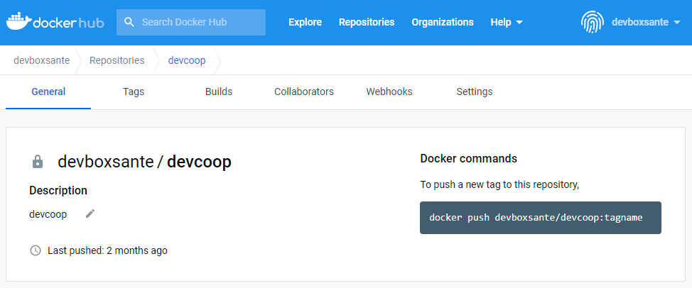

Un container docker
Un container docker pour tous les composants de la DevBox-santé dans votre environnement HDS.
Chacun de nos clients dispose d’une image Docker contenant les éléments de la DevBox-Santé adaptés à leur besoin directement sur le hub de Docker :

Il vous suffit donc de “PULLER” l’image :
docker pull devboxsante/clientname:tagname
Configuration de l’image
Variable d’environnements
Dans le fichier de configuration application.yml est disposée des variables d’environnements permettant de forcer une configuration spécifique. Comme par exemple en surchargeant l’url du DMP :
docker run --name devbox-sante -p 8080:8080 -d \ -e DEVBOX_DMP_URL='https://devh.lps2.dmp.gouv.fr/si-dmp-server/v2/services' devboxsante/clientname:latest
Vous pouvez même mettre toutes vos variables dans un fichier :
docker run --name devbox-sante-clientname -d --env-file=clientname.env -p 8080:8080 devboxsante/clientname:tagname
Recréer une image
Vous pouvez même recréer une image en déposant votre configuration et autres certificats. Comme par exemple pour remplacer le fichier application.yml fourni par défaut :
FROM devboxsante/phealing:20221110-1
WORKDIR /workspace
EXPOSE 8080
COPY application-clientname.yml /workspace/BOOT-INF/classes/application.yml